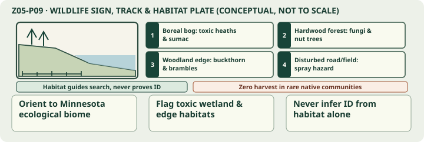

Z05-P09 · Wild foods and poisonous lookalikes · New manuscript
Minnesota Biomes, Plant Communities and Habitat Screening
Use Minnesota four ecological provinces—Laurentian Mixed Forest, Eastern Broadleaf, Prairie Parkland, and Tallgrass Aspen—to frame habitat context without substituting habitat for anatomy.
When it applies · Regional orientation for Z05 field observation across Minnesota.
Equipment · MN DNR Native Plant Communities reference, biome map.

Actions
- Use Minnesota ecological provinces and native plant communities to anticipate expected native flora, boreal bog toxins (bog laurel, poison sumac), and woodland fungi.[B01, B18]
- Recognize that invasive and toxic species cross ecological boundaries freely; finding a plant in a familiar habitat never confirms its identity.[B18, B19]
- Protect intact native prairie remnants, calcareous fens, and old-growth forests by observing without trampling or harvesting.[B17, B18, B22]
Failure recognition · Assuming a wooded bog contains only safe northern berries overlooks toxic bog rosemary, leatherleaf, and poison sumac.[B18]
Verify · Habitat notes supplement—never replace—multi-character anatomical verification.[B18, B20]
Stop or change course · Stop collecting in rare native plant communities, fens, or SNAs regardless of species abundance.[B17, B18, B22]
Evidence and editorial notes
- B01 · Bell Museum (UMN) · Minnesota Biodiversity Atlas (Current web edition)
- Section: Minnesota Biodiversity Atlas regional occurrence and specimen data · Conditions: Documenting regional plant and fungal distribution in Minnesota
Support: Regional atlas records establish verified county-level occurrences and phenology windows for Minnesota plants and fungi.
Limitations: Occurrence maps confirm regional presence only; they never confirm a field specimen identity or consumption suitability. · Conflicting evidence: None noted.
Editorial note: Anchors Z05 Minnesota regional taxonomy. · Specialist reviewer: Bell Museum / regional botanist
Primary source · checked 2026-11-25 - B17 · Minnesota DNR · Minnesota Rare Species Guide and Native Plant Reference (Current web edition)
- Section: Protected rare plants and harvest conservation boundaries · Conditions: Minnesota endangered, threatened, and special-concern flora
Support: Rare native plants (e.g., wild ginseng, orchids, prairie perennials) carry strict legal protections against digging or harvest.
Limitations: Never dig unknown roots or bulbs on public land; verify legal collecting status before touching any specimen. · Conflicting evidence: None noted.
Editorial note: Prevents illegal digging of protected flora. · Specialist reviewer: State botanist and conservation officer
Primary source · checked 2026-11-25 - B18 · Minnesota DNR · Minnesota Native Plant Communities and Biomes (Current web edition)
- Section: Native plant communities and habitat-context screening · Conditions: Boreal forest, hardwood forest, wetland, and prairie biomes of Minnesota
Support: Habitat association narrows candidate species and flags toxic wetland indicators (e.g., water hemlock, poison sumac, bog laurel).
Limitations: Habitat never proves species identity because invasive and toxic species cross community boundaries. · Conflicting evidence: None noted.
Editorial note: Grounds Z05 habitat-context methodology. · Specialist reviewer: Plant ecologist
Primary source · checked 2026-11-25 - B19 · Minnesota DNR · Terrestrial Invasive Plants and Toxic Lookalikes (Current web edition)
- Section: Terrestrial invasive species and roadside contamination hazards · Conditions: Disturbed corridors, edges, and utility rights-of-way
Support: Roadsides and invasive-dominated corridors are frequently sprayed with herbicides and accumulate runoff metals and road salts.
Limitations: Never collect food plants from roadsides, industrial lots, sprayed corridors, or contaminated floodplains even if species identity is certain. · Conflicting evidence: None noted.
Editorial note: Separates species ID from site-contamination safety. · Specialist reviewer: Environmental health and botanist
Primary source · checked 2026-11-25 - B20 · USDA Forest Service · Celebrating Wildflowers: Plant Identification and Conservation (Current web edition)
- Section: Botanical morphology terminology and multi-character keys · Conditions: Observing leaf venation, margins, flower symmetry, and fruit anatomy
Support: Accurate plant identification requires confirming multiple independent morphological characters at the observed life stage.
Limitations: Missing flowers, fruit, or underground parts require stopping identification rather than guessing. · Conflicting evidence: None noted.
Editorial note: Enforces multi-feature identification standard. · Specialist reviewer: Plant taxonomist
Primary source · checked 2026-11-25 - B22 · Minnesota DNR · Scientific and Natural Areas Visitor Rules and Prohibitions (Current web edition)
- Section: Foraging; No collecting plants, animals, rocks or fossils · Conditions: Minnesota SNA; current site-specific rule
Support: The default restriction applies. A limited personal-use exception exists only where the site rule specifies it.
Limitations: No interchange with state parks, NPS sites, state trails, or private land. · Conflicting evidence: Conditions are recorded in the A03 audit.
Editorial note: Public-land foraging compliance boundary. · Specialist reviewer: Minnesota DNR resource manager
Primary source · checked 2026-11-25
Source lineage · New manuscript (Z05 P19-C regional ecology) · Classification · New manuscript.